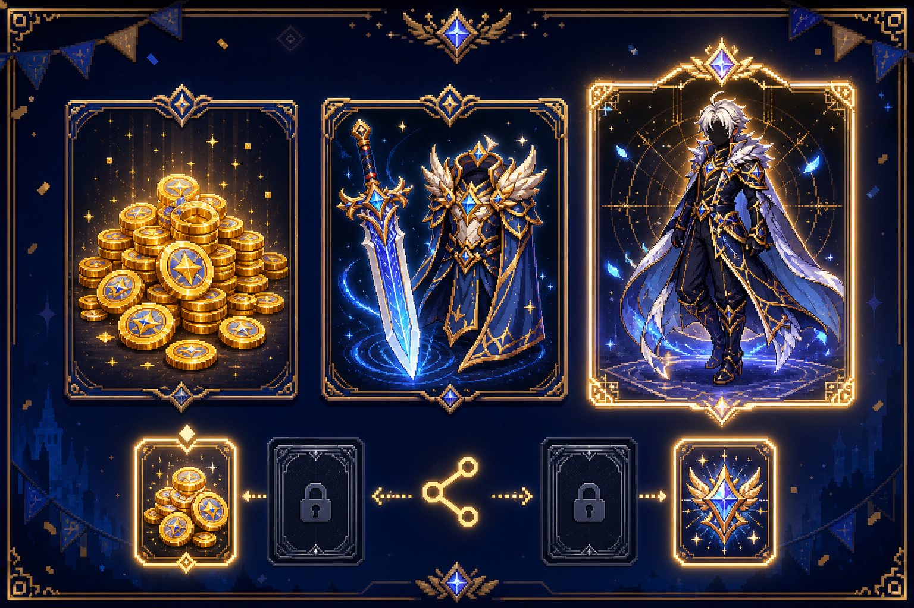

回憶照片調查
數位隱私權 · 2D 角色扮演
NULL被看見的我們
當每一張照片都留下痕跡，你想讓誰看見？
尚未建立存檔
正在載入資料層…
開發資料錯誤
請檢查對應的 data JSON 檔案與必要欄位。
存檔工具
沿著照片留下的線索，找回被忽略的界線。
v2.4 · 第一章探索版
Enter：下一句 Space：顯示全文 Esc：結束已完成對話
探索模式
PLAYER
位置：2，4
方向鍵或 WASD 移動 · E 互動 · 亦可使用下方按鈕
第一章 · 相簿區域
DATA NOISE
回合 1戰鬥開始
敵方資訊
生命值 45／45
情緒策略
覺察
可觀察線索
尚未發現
PLAYER
生命值
100／100
技能值
50／50
目前情緒
覺察
狀態效果
無
下一步行動：
解謎支線 · 照片檢查
照片檢查
CHAPTER 02
離開活動會場。
目前進度已保存。
NULL PHONE
ECHO 貼文
照片預覽
P
PLAYER準備分享新內容
活動攤位 · 限定遊戲獎勵
遊戲體驗問卷
完成活動問卷，即可選擇限定遊戲獎勵。

第一章 · 戰後反思
不需要輸入姓名、聯絡方式或任何真實個人資料。
CHAPTER 02 · SHARE
第二章完成
你看見了資訊如何被連在一起，也留下了自己的選擇。
PLAYER GUIDE